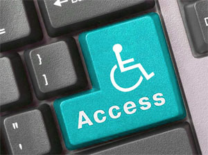
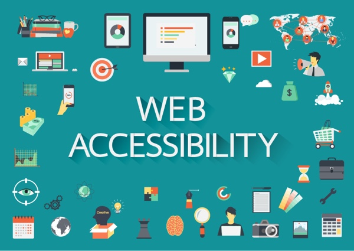

POR UN MUNDO ACCESIBLE PARA TODOS
¿Qué es la accesibilidad web?
Hablar de Accesibilidad Web es hablar de un acceso universal a la Web, independientemente del tipo de hardware, software, infraestructura de red, idioma, cultura, localización geográfica y capacidades de los usuarios.
Con esta idea de accesibilidad nace la Iniciativa de Accesibilidad Web, conocida como WAI (Web Accessibility Initiative). Se trata de una actividad desarrollada por el W3C, cuyo objetivo es facilitar el acceso de las personas con discapacidad, desarrollando pautas de accesibilidad.
¿Por qué la Accesibilidad Web es importante?
La idea principal radica en hacer la Web más accesible para todos los usuarios independientemente de las circunstancias y los dispositivos involucrados a la hora de acceder a la información.
Partiendo de esta idea, una página accesible lo sería tanto para una persona con discapacidad, como para cualquier otra persona que se encuentre bajo circunstancias externas que dificulten su acceso a la información (en caso de ruidos externos, en situaciones donde nuestra atención visual y auditiva no están disponibles, pantallas con visibilidad reducida, etc.).
